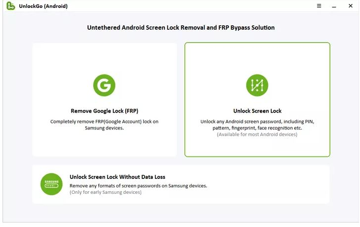

The No. 1 on our list is iToolab UnlockGo for Android which is an efficient and professional Android unlocking software for many models and brands. Not only it helps you bypass the Google FRP lock but also PIN codes, pattern locks and face recognition. It has amazing features which get your job done in minutes saving your time and money.
For business customers, you are welcome to customize your plan for multiple devices.

On main interface of UnlockGo, click on the Unlock Screen Lock option. Then, you will connect your Android device to your PC via USB Cable.
On the next window, from the drop-down menu you will have to select the brand of your Android device and then click on Unlock button.
Next, you will put your device into Recovery Mode depending if you have or not home button of your Android phone to continue further process.
Here, you will have to follow the on-screen instructions carefully and finally restart your device; this will lead you to set up a new passcode for your phone.